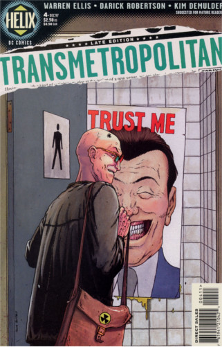

Transmetropolitan 

Transmetropolitan is a cyberpunk, transhumanist comic book series written by Warren Ellis and co-created and designed by Darick Robertson; it was published by American company DC Comics in 1997-2002. The series was originally part of the short-lived DC Comics imprint Helix, but upon the end of the book's first year the series was moved to the Vertigo imprint and DC Comics shut-down the Helix imprint. Transmetropolitan chronicles the battles of Spider Jerusalem, infamous renegade gonzo journalist of the future, an homage to gonzo journalism founder Hunter S. Thompson. Spider Jerusalem dedicates himself to fighting the corruption and abuse of power of two successive United States presidents; he and his "filthy assistants" strive to keep their world from turning more dystopian than it already is while dealing with the struggles of fame and power, brought about due to the popularity of Spider via his articles.
The monthly series began in July 1997 and concluded in September 2002. The series was later reprinted in an array of ten trade paperback volumes, and also featured two "specials" (I Hate It Here and Filth of the City) with text pieces written by the Spider Jerusalem character and illustrated by a wide range of comic artists. These were later collected in trade paperbacks.
Synopsis
Some time in the future (how long precisely is never specified, but said to be in the 23rd century) Spider Jerusalem, retired writer/journalist and bearded hermit, lives in an isolated, fortified mountain hideaway.[5] Following a call from his irate publisher demanding the last two books per his publishing deal, Jerusalem is forced to descend into The City, a twisted hedonistic amalgam of pervasive consumerism, sex, violence, and drugs where one can indulge in taboo activities such as cannibalism and child prostitution as a part of daily life. This futuristic culture is highly self-centered and focused almost exclusively on the present. "Revivals" from cryogenic stasis are largely ignored and left to fend for themselves on the streets, and people almost never visit the cultural "Reservations" that were established to preserve past civilizations; these are now left to run the course of their timeline in peace, with the sole exception of the Republican Party Reservation, which has its own television show because it is a hotbed of sex and erotica. No one even knows the current calendar year (this fact revealed by Jerusalem in Issue #42), so dates of events are always referred to in relation to the present day or to famous events that occurred around the same time (such as the death of a celebrity); this disassociation from time causes a very odd relationship with infamous events of the past, including a chain of restaurants named after Jeffery Dahmer and the heavily sexualized glorification of Hitler and Nazi Germany.
If you want to know more about about this comic, visit Transmetropolitan's wikipedia page